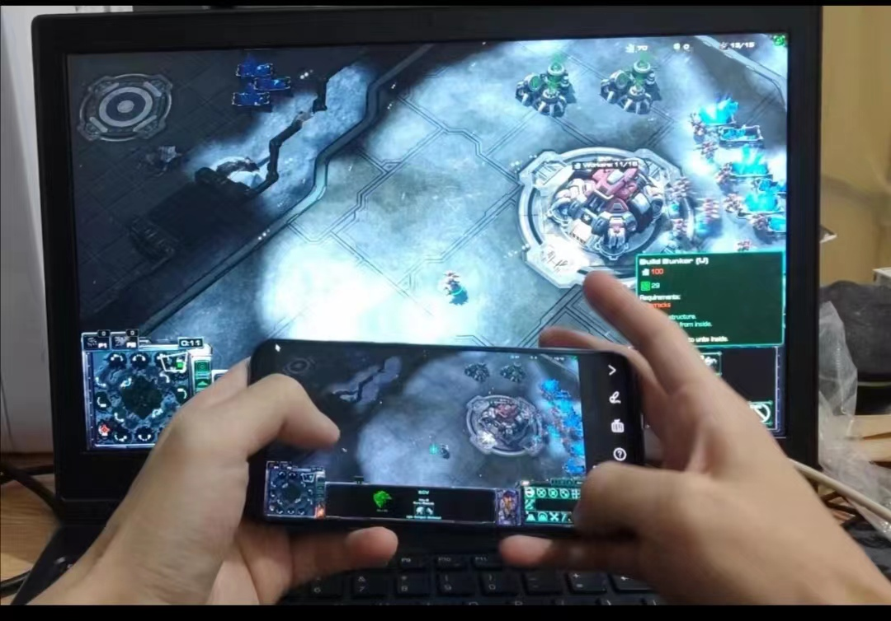

Ziheng Ding
Graduate Student
Home
Course work
Research
Internship
Final Year Project
Resume
Code
Personal
SocialContact:
217 Red Gym, 716 Langdon Street, Madison, WI 53706
Course Work
Graduate
1 Graph Neural Network (GNN) implementation
Supervisor: Prof. Umit Yusuf Ogras
Date:Jan. 2024 – May. 2024
• Write the Verilog code for a deep neural network (DNN) that will be embedded into a graph.
• Write the Verilog code for a GNN that embeds the previous DNN.
• Synthesize the design using Design Compiler and verify the synthesized netlist.
• Perform automatic place-and-route (APR).
• Post-APR - export GDS, import the GDS into Virtuoso layout, and perform DRC/LVS on the final layout of the design.
• Make power/performance estimations.
2 Design and implement a processor
Supervisor: Prof. Setareh Behroozi
Date:Jan. 2024 – May. 2024
• This ASCII diagram shows the block diagram layout of the modules you described, with arrows indicating data flow and dependencies between them.
• This project introduces a 5-stage pipelined processor for WISC-S24 ISA, incorporating specialized features such as Cache architecture, enhanced stall mechanism, separate control, and data flow management, and optimized control signal handling. The Cache system operates under cache hit conditions, with misses triggering reloads, impacting hit rates. The stall mechanism disables clock rising edges, improving pipeline control. Separate control/data flow enhances parallel processing efficiency. Control signals are consolidated into a 16-bit register for streamlined management. The halt signal ensures proper program termination across stages. Load-to-use stall hazards are addressed by resetting pipeline registers. Verilog is used, and simulation tools include Modelsim or Icarus. Deliverables include Verilog files, testbenches, support files, and performance logs.
3 Embedded Computing Systems
Supervisor: Prof. Younghyun Kim
Date:Sep. 2023 – Dec. 2023
This course examines the design and analysis of high-performance embedded computing systems. Topics covered include embedded applications, embedded processors and multiprocessors, embedded system design and simulation, embedded hardware design, configurable/reconfigurable embedded systems, embedded compilers and tool chains, run-time systems, application design and customization, hardware and software co-design, and low-power design.
4 Digital Circuits and Components
Supervisor: Prof. Akhilesh Jaiswal
Date:Sep. 2023 – Dec. 2023
Principles and characterization of logic circuits. Design and analysis techniques for applied logic circuits. Transmission lines in digital applications. Families of circuit logic currently in use and their characteristics.
Undergraduate
1 A Real-Time Strategy Game Assisting App
Date: Mar. 2023 – May. 2023
Report

• Designing an app that allow the user to control a PC with a smartphone.
• Using a screen mirroring app to project the PC screen to the smartphone.
• Creating a flowing screen window on the smartphone to capture gestural inputs and block the screen mirroring app from receiving the input.
2 Path-search algorithm design
Supervisor: Prof. Fangzhen Lin Date:Apr. 2022 – May. 2022
Report

• Finished the path-search algorithm design with the aim to determine the shortest route from two random
places to their respective endpoints in a 256x256 obstructed map scene in less than one second
• Within the scenario containing two agents, used bidirectional A* in the code implementation to save
computation and meet the computation time limit.
• The trigger decision of re-route finding was designed so that when the distance between two agents falls
below a certain threshold, the path would be recalculated after each move to avoid collision.
3 Design and implementation of an Omni-directional Quadruped Robot
Supervisor: Prof. Vinod Prasad
Date:Nov. 2021 – Dec. 2021
Report
Video
• Collaborated with team members, finished the designment of a 3D-printed robot that meets the expectation
of moving omnidirectionally without turning its body.
• Used UCOSIII real time operating system on STM32 board to control 12 servo motors with three motors
on each leg.
• Worked on CPU clock scheduling and multi-threaded processing; built the logic of the control algorithm
based on gait analysis to make the 12 motors move synchronously to complete a smooth movement.
• Decided the algorithm's step size is at the beginning of each movement depending on the angle of the
movement relative to the starting location; did repetitive tests to meet the project’s requirement.
4 Design and implementation of an autonomous tracking car
Supervisor: Prof. Ross Murch Date: Mar. 2020 – May. 2020
Report


• Finished the logic and programming part of the design of a robot car which was expected to be able to complete the tasks including going along the track, choosing the correct split to go, turning in the 90 degrees angles, and stopping at the end; did the troubleshooting and completed the demo successfully
• Adapted the car to different road conditions, including straight lines, arcs, forks, and sharp turns; made sure the car was moving smoothly on most occasions though it got stuck in a sharp turn
• Found out the essence problem underlines the car’s failure in crossing the sharp turn, token the limitation of the car sensor into consideration and adopted differentiated steering (used different motor speeds on wheels of each side of the car when cross the sharp turn) in the troubleshooting.
5 Design and implementation of a propeller car
Supervisor: Prof. Ting Chuen PONG Date: Mar. 2020 – Jun. 2020
Video-Run Video-Introduction Video-APP
• Designed a car that was driven by two propellers and was able to advance and turn
• Remotely controlled the car by an app on my smartphone and established the connection through the
Bluetooth
• Overcame the major obstacles of the work, the limitation of power and material, by the utilize of bearing
and balanced the load on wheels; improved the car’s performance. Figured out that because the power
provided by propellers was weak, the car must be constructed with light enough materials and have as less
friction as possible.